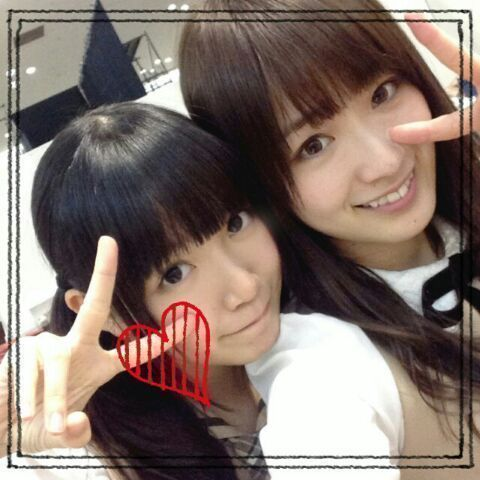
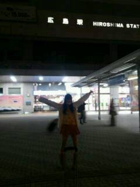

| 2013/12 30 Mon | ひめたん(*>ω<*)そ の388 |
土曜日は全握、日曜日は個握とゆーことで
今年最後の土日は
京都で過ごしました( ^O^ )☆
両日ともとっても寒かった中
来てくださったみなさんありがとうございました！
お留守番チームのみなさん レポしますっ
◎全国握手会

握手ペアは ずーさん (高山一実ちゃん)
ずーさんファンのみなさん
仲良くしてくださってありがとうございました！
フレンドリーな方ばっかりで
平和でのんびりしたレーンでした♪♪
温厚で優しい方ばっかだったなー
ずーさんのポジピース精神を
あやかっていらっしゃるからなのかな(＊^ω^＊)
ずーさんの日記はもう見たよね？
ふたりでポジビームたる新技をしておるよー
ひめきゅんのみなさんありがとーう！
やっぱり京都会場ってなると
お久しぶりの方がたくさんいらっしゃって
会えて嬉しかったな＊
遠征してくれたみなさん
年末の忙しい中ありがとうね(´；；｀)
はじめましての方も
直接お話できてよかったです
これから仲良くしてねよろしくねーっ
ライブも楽しかった！
7th最後の全握とゆーことで
やさしさとは 披露する機会も
またしばらくなくなっちゃうのかな......
やさしさメンバーのみんなありがとう(´；；｀)
みんなと一緒にできて本当に嬉しかったよー
またユニット組んでいただけるように
ひめたんがんばるね！
◎個別握手会
２日連チャンの方はお疲れ様でした♪♪
５部参加ってことで
長いことお待たせしましたっ
遅い時間までありがとうね(´；；｀)
髪は久々に巻き下ろしでしたー
結構好評だったので１年の締めにと思って。
ナタリー・UTBスタイルです！
京都にはなかなか来るチャンスがないから
今日はたくさん挨拶できてよかったー
そうそう
東名阪(阪...大阪じゃないけどさっ)
の中じゃいちばん近いからかなー
広島から来たよとか
中国四国地方から来たよって方も
たくさんいらっしゃって
方言を久々に聞いた(´；；｀)
本当に嬉しかったなー
なんだか近いものを感じるのよね
こっち来てからあんま聞かないからさー
あっ関西弁も京都弁もすきよ///
昨日ごはん行ったら
従業員さんに「おいでやす 」って言われて
なんだからほっこりしちゃった＊＊
だから地方出身の方は
方言ばりばり出してこねーっ
そんなわけで
お姉さんチームはまだまだ
メディアのお仕事が残ってるので
全力で応援しつつ
私たち学生チームは今日で仕事納めでした！
ここで改めて
お仕事において
私たち乃木坂46に携わってくださったみなさん
１年間お世話になりました
まだまだ未熟な私たちですが
来年ももっともっとがんばります
よろしくお願いします( ^O^ )
ひめきゅんさん本当にありがとう！
年内会うのは今日が最後だったけど
ひめたんの日記は年末年始も
休まず全力で更新しますので遊びに来てねー
コメントするのに冬休みはいらないでしょ？んふ
ホテルは安定の
いくちゃん (生田絵梨花ちゃん)と相部屋でした
いつもホテルではおとなしいいくちゃんが
珍しくテンション上がっちゃったみたいで
ずーっと作詞して歌ってた。
そんないくちゃんだけども
夜遅くまでお勉強してたり
動画見ながらダンスの練習したりしていて
真面目だなーと改めて関心しました( ^O^ )
いくちゃん３日間ありがとう！
いつもいくちゃんと同じ部屋って
なんか気楽に休めるから好きだよー♪♪
あっそれから
まっちゅん (松村沙友理ちゃん)の日記
みなさんみましたー？
まっちゅんありがとーう∩( ^ω^ )∩
そうそう、２人って姉妹みたいーだとか
ひめたんとりんご姫でひめ姫レーンだねーとか
たくさん言っていただけて
びーむを受け入れてくださる率も
半端なくてとっても楽しかったのです！
まっちゅんすきすきーっ
ひめたんのブログの
コメント欄下２ケタに46を踏んだ方へ
手書きでコメ返するコーナー
＼ ひめたん46 ／

そんな私はなんと！
ついに！

広島に帰りました＼( ^O^ )／
プライベートで帰ってきたのは
なんと２年ぶり！
選抜入るまでは帰らないーと言って
入ったら入ったでスケジュールがなかなかあわず
気づけば高２の冬......
それでも帰れてよかったーヽ(；▽；)ノ
今年は地元でゆっくり
羽を伸ばしつつ
課題を......やろうと思......
(＊´・ω・＊)
コメント(610)
2013/12/30 00:30